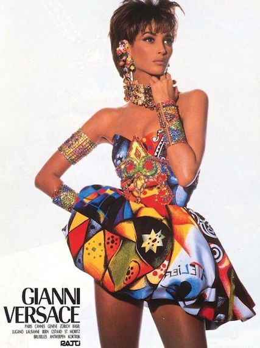

Designer Who Infused Fashion With Life and Art
I think it's the responsibility of a designer to try to break rules and barriers.
In the fashion world, Gianni Versace is credited with being the first to blend fashion and Rock & Roll, influencing pop culture with a force never seen before. That is the key of this collection, being yourself. Don't be into trends. Don't make fashion own you, but you decide what you are, what you want to express by the way you dress and the way to live.